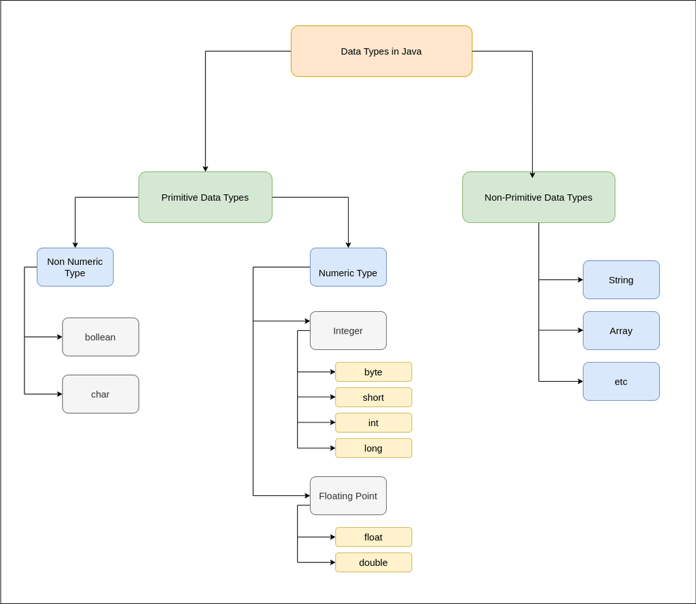
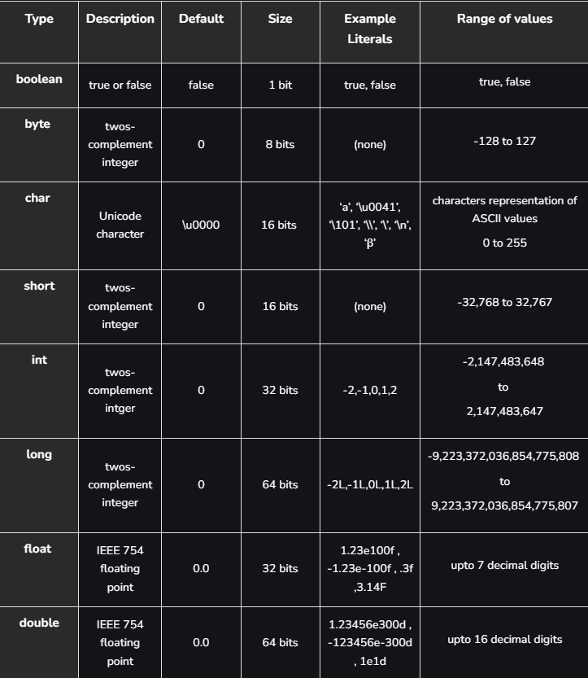

Java is statically typed and also a strongly typed language because, in Java, each type of data (such as integer, character, hexadecimal, packed decimal, and so forth) is predefined as part of the programming language and all constants or variables defined for a given program must be described with one of the Java data types.
Datatypes in Java
Data types in Java are of different sizes and values that can be stored in the variable that is made as per convenience and circumstances to cover up all test cases. Java has two categories in which data types are segregated
Primitive Data Type: such as boolean, char, int, short, byte, long, float, and double
Non-Primitive Data Type or Object Data type: such as String, Array, etc.

Primitive datatypes in Java
Primitive data are only single values and have no special capabilities. There are 8 primitive data types. They are depicted below in tabular format below as follows:

Non-Primitive Data Type or Reference Data Types
The Reference Data Types will contain a memory address of variable values because the reference types won't store the variable value directly in memory. They are strings, objects, arrays, etc.
Strings
Strings are defined as an array of characters. The difference between a character array and a string in Java is, that the string is designed to hold a sequence of characters in a single variable whereas, a character array is a collection of separate char-type entities. Unlike C/C++, Java strings are not terminated with a null character. Syntax: Declaring a string <String_type> <string_variable> = "<sequence_of_string>";
Class
A class is a user-defined blueprint or prototype from which objects are created. It represents the set of properties or methods that are common to all objects of one type. In general, class declarations can include these components, in order:
Modifiers :A class can be public or has default access. Refer to access specifiers for classes or interfaces in Java
Class name: The name should begin with an initial letter (capitalized by convention).
Superclass(if any): The name of the class’s parent (superclass), if any, preceded by the keyword extends. A class can only extend (subclass) one parent.
Interfaces(if any): A comma-separated list of interfaces implemented by the class, if any, preceded by the keyword implements. A class can implement more than one interface.
Body: The class body is surrounded by braces, { }.
Object
An Object is a basic unit of Object-Oriented Programming and represents real-life entities. A typical Java program creates many objects, which as you know, interact by invoking methods. An object consists of :
State: It is represented by the attributes of an object. It also reflects the properties of an object.
Behavior: It is represented by the methods of an object. It also reflects the response of an object to other objects.
Identity: It gives a unique name to an object and enables one object to interact with other objects.
Interface
Like a class, an interface can have methods and variables, but the methods declared in an interface are by default abstract (only method signature, no body).
Interfaces specify what a class must do and not how. It is the blueprint of the class.
An Interface is about capabilities like a Player may be an interface and any class implementing Player must be able to (or must implement) move(). So it specifies a set of methods that the class has to implement.
If a class implements an interface and does not provide method bodies for all functions specified in the interface, then the class must be declared abstract.
A Java library example is Comparator Interface. If a class implements this interface, then it can be used to sort a collection.
Array
An Array is a group of like-typed variables that are referred to by a common name. Arrays in Java work differently than they do in C/C++. The following are some important points about Java arrays.
In Java, all arrays are dynamically allocated. (discussed below)
Since arrays are objects in Java, we can find their length using member length. This is different from C/C++ where we find length using size.
A Java array variable can also be declared like other variables with [] after the data type.
The variables in the array are ordered and each has an index beginning with 0.
Java array can also be used as a static field, a local variable, or a method parameter.
The size of an array must be specified by an int value and not long or short.
The direct superclass of an array type is Object.
Every array type implements the interfaces Cloneable and java.io.Serializable.